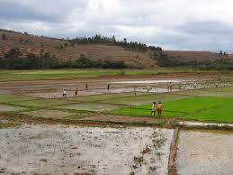
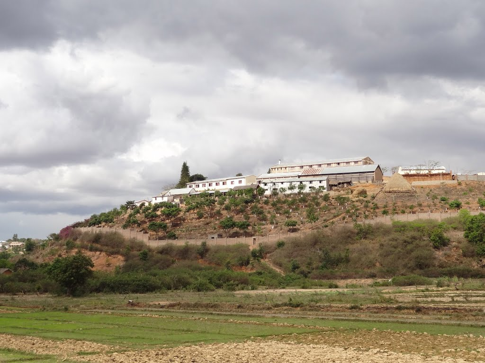

About me
I am Natacha, but my full name is Harivelomandimby Volana Sariaka Natacha.When I was in my village, people usually called me Volana but since last year, onja staff called me Natacha.So now, I am used to hear these name though I still enjoy my chilhood name.I have three siblings and I am the oldest.
My last holiday in my village

As in our program at school last year, we had a big holiday at the end of the year.I was so excited because our village is quite far from here so we couldn't go home during the small holiday.Then, we got 3 weeks .I thought it was not enough but I can say it was wonderful. How was it going?The thing which makes me really want to do holiday is to visit my family so when we met each other again we all were full of happiness, and even me and my brother were often having kind of discussion before, it was like nothing he was also happy to see me again.That was my last holyday and I wish that we will happiness like that over and over.
My village

I am from a village called Andilanatoby. It is in Ambatondrazaka district. We haven't such a big industry or factory but most people are farmers.However, in term of education, we are not behind we have two high school public and private.But the main problem in my village is the national road, it is totally broken so that brings an economic affects there. As I said before, most of the residents are farmers so it was so difficult for them to sell their local products to another region and it is a risk for the other too.It wasn't a good thing.Farmers sell their products in the the cheapest way and they bought end product so expensive.

A part of rn44 national road